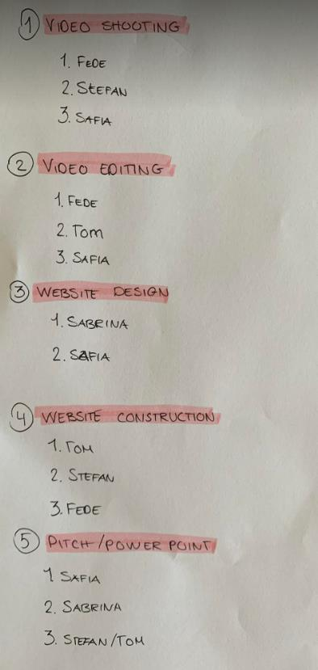
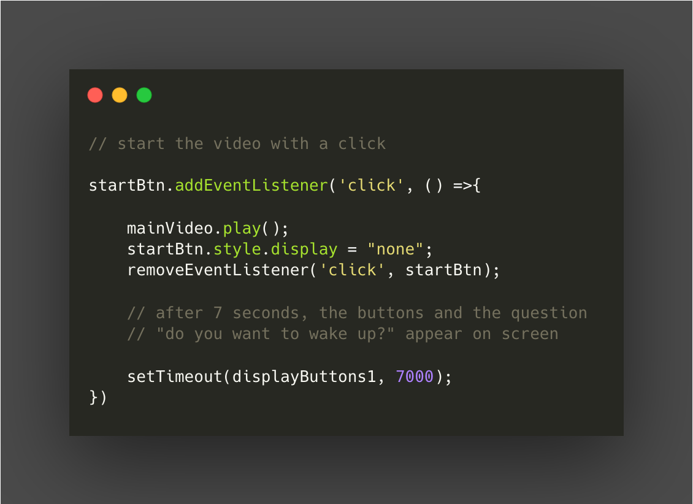
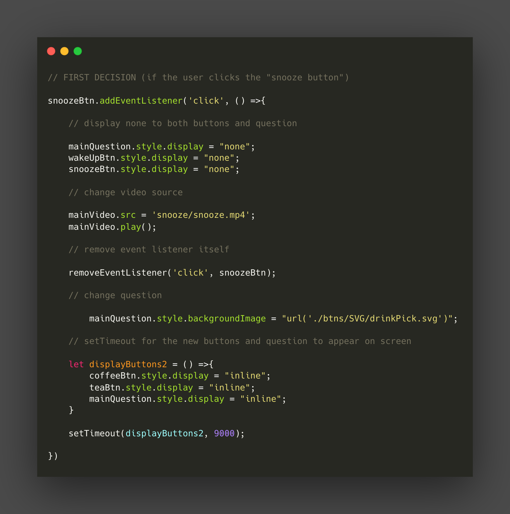

We started by discussing roles, goals, and rules.
We imagined and developed our persona, asigning it specific attributes:
- -Genderless
- -Age: 18-30
- -Open to new experiences post-pandemic
We came up with examples that could lead to making decisions along the story.
We knew too many "bosses" would mean trouble, so we divided the project.
Being in charge of the filming part, I offered my house in order to have a controlled environment. In addition, I offered to wear the go-pro.
Creating the code for things to work was just pure joy.


What did I learn in this project?
- I improved my editing skills with Adobe Premiere Pro, developing every single possibility the user could make.
- I became a better team-player by delegating when needed and stepping up when required.
- I have a better understanding of JavaScript after using anonymous functions, event listeners and animations.
- I got a better grasp of the technical equipment needed to film.
- I perfected my time management skills by being efficient during meetings, discussing roles early and agreeing on expectations.